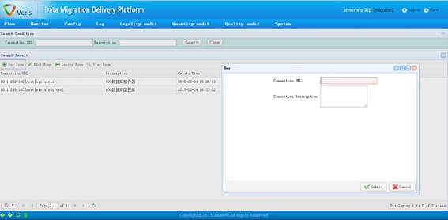

数据库连接串配置页面
功能描述：
数据库连接串配置页面提供数据库连接串的配置接口；连接串表达式由IP（或者加上端口和服务名称等）、用户名、密码和数据源（数据源部分一般可以不指定）构成，各部分使用竖线 | 间隔，各部分格式为各类数据库自带API连接时所使用的格式，例如：
|
数据库类型 |
表达式示例 |
|
MYSQL |
10.1.249.100|root|easeaseas|tool |
|
ORACLE |
10.1.249.100:1521/ORCL|test|test |